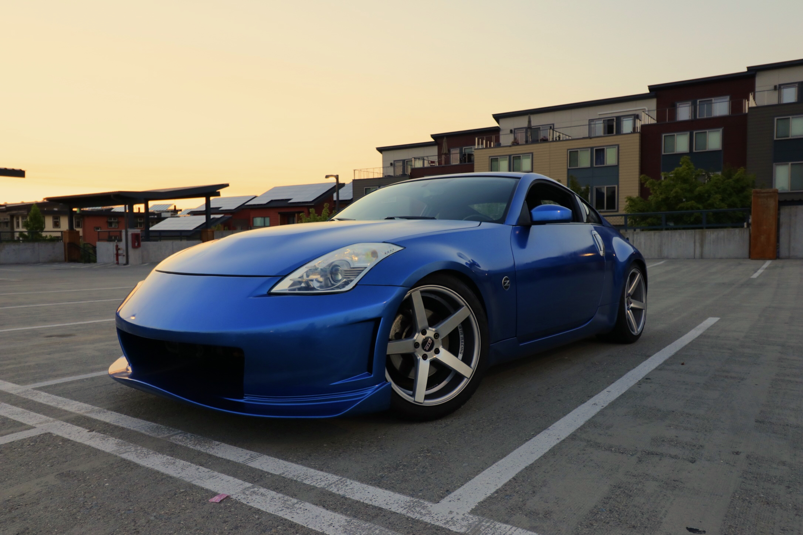

Somewhat a deviation from my normal car builds, this 350z was a primarily cosmetic-only project.
The cars I typically buy are excellent platforms to improve on to, whether it be my S2000 that was in desperate need of a turbocharger’s power boost, or a complete interface redesign. Besides that god-awful head unit, Nissan really did a lot right with this car though — a well-balanced, real-wheel drive sports coupe with plenty of power from factory.
I didn’t feel the need to do anything crazy with this car, like pull the engine and do any extreme modifications, but it definitely needed some attention.
I started with the easiest problem first: restoring the headlights. All they needed was a quick wet-sand and re-clear to look as good as new.
Next up was addressing the interior, which was essentially flaking itself off. The cheap paint was beginning to peel off of all interior panels, so those were all removed and repainted (this time with adhesion promoter and matte sealer to prevent future premature failure).
All interior pieces needed to be either re-painted, vinyl wrapped, polished, or if they’re just too far gone, replaced.
As for the full Nexus 7 tablet integration, I have a separate detailed write-up on that process.
The paint came last. And it’s a little special — I convinced my friends at Raail to sponsor me some of their removable auto paint. This special type of paint is removable like a traditional vinyl wrap, and can be applied in a home garage. No special paint booth required.
Sunset pics really bring out the pearls and translucent pigments in the paint.
